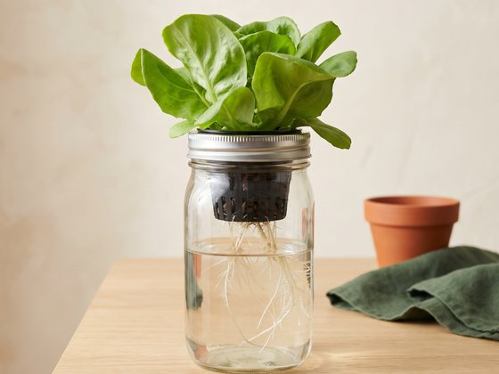

Example · water jar
Lettuce in a mason jar
3D example by The Root Collective
Tip: leave the air gap. It feels wrong not to top up the water, but the top roots need air to breathe.
Community
Every setup teaches someone something. Show us what you're growing, ask anything, and learn from people growing food in kitchens, closets, and windowsills everywhere.
01 Member setups
Jars, trays, buckets, and pots, built with whatever people had at home. Each one comes with a tip from the grower.

3D example by The Root Collective
Tip: leave the air gap. It feels wrong not to top up the water, but the top roots need air to breathe.
Share a photo of what you're growing and one thing you learned. Brand new beginners very welcome.
Share your setupYogurt tubs, old totes, a shelf of jars under a light. If it grows food, we want to see it.
Share your idea03 Questions & answers
Tap a question to see the answer. Don't see yours? Ask the community.
No. A jar, some seeds, plant food, and a bright window are enough for your first harvest. Our jar guide shows you how. A small LED grow light helps a lot in winter, but you can add one later.
It's best not to. Plants growing in water get everything from what you mix in, and most garden fertilisers are made to work alongside soil, so they're missing some nutrients. Look for plant food labelled "hydroponic" and follow the amounts on the label. Our plant food guide explains what to buy.
Usually, yes. Very hard water can push the pH (how acidic or alkaline the water is) too high for some plants, so if your plants look pale or slow, a cheap pH test kit can tell you whether that's the problem. Our pH guide shows how.
About 12 to 16 hours a day. Your sunniest window can work from spring to fall. In winter, days are too short and dim for most greens, so a small LED grow light makes a big difference. Our light guide has more.
That's algae, and it grows when light reaches the water. It isn't dangerous, but it competes with your plant. Cover the jar or container so no light gets in.
Microgreens. They're ready to cut in about 1 to 3 weeks, depending on the seed. Radish, broccoli, and pea shoots are easy ones to start with. Our microgreens guide shows you how.
Lots! Leafy greens like spinach and kale, herbs like basil, mint, and parsley, and green onions all grow well indoors. Fruiting plants like tomatoes and peppers are possible too, but they need much more light and a bigger setup, so they're better as a second project.
Yes. Hydroponic farms grow a lot of the lettuce sold in stores. Rinse your harvest like you would any produce, and keep your containers clean between grows.
Join the Root Collective to get new guides, and chat with other growers on our Discord.